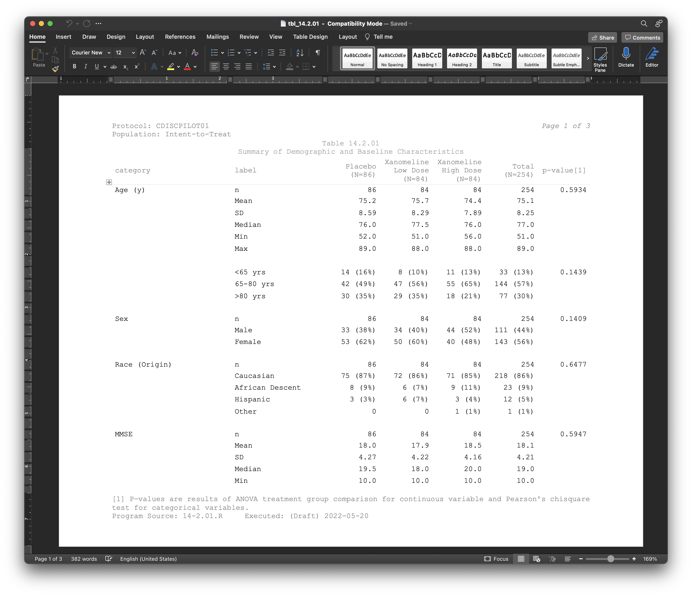
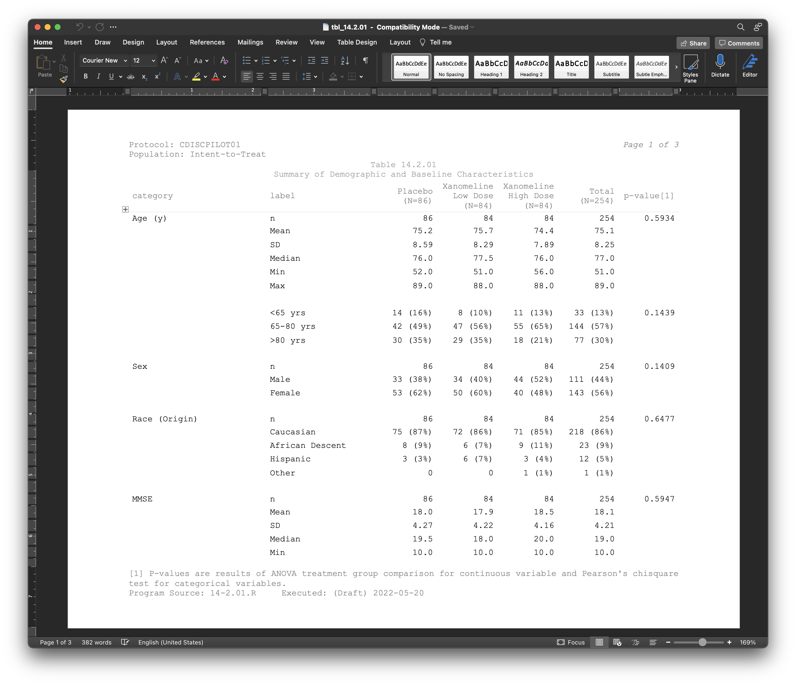

2022-06-10
A new version of the R package {gt} has been released! We are now at version 0.6.0 and there are now even more features that’ll make your display/summary tables look and work much, much better. In this post, let’s run through some of the bigger changes and see the benefits they can bring!
If you’re in the pharmaceutical industry and have a hand in generating tabular reporting for regulatory submissions, the new RTF rendering features will output tables in a more suitable format. Some of the key changes include:
page.*) added to the tab_options() function (like page.orientation, page.numbering, etc.)tab_header() (the preheader argument)I won’t show all the code required for generating a Pharma-specific table here. For detailed examples, it’s better to look at the examples in Phil Bowsher’s Clinical-Tables-in-R-with-gt repository on GitHub, particularly the .Rmd files beginning with gt-. What I will show you here is a screen capture of how one of those tables looks when opened in Word.

We now have four new functions that allow you to make precise substitutions of cell values with perhaps something more meaningful. They all begin with sub_ and that’s short for substitution!
sub_zero()
Let’s begin with the sub_zero() function. It allows for substituting zero values in the table body. Here are all the options:
sub_zero(
data,
columns = everything(),
rows = everything(),
zero_text = "nil"
)Let’s generate a simple, single-column tibble that contains an assortment of values that could potentially undergo some substitution.
tbl <- dplyr::tibble(num = c(10^(-1:2), 0, 0, 10^(4:6)))
tbl# A tibble: 9 × 1
num
<dbl>
1 0.1
2 1
3 10
4 100
5 0
6 0
7 10000
8 100000
9 1000000 With this table, we can format all of the numbers in the single num column and replace the zero values with "nil" text with separate call of sub_zero().
tbl %>%
gt() %>%
fmt_number(columns = num) %>%
sub_zero()| num |
|---|
| 0.10 |
| 1.00 |
| 10.00 |
| 100.00 |
| nil |
| nil |
| 10,000.00 |
| 100,000.00 |
| 1,000,000.00 |
sub_missing() (formerly known as fmt_missing())
Here’s something that’s both old and new. The sub_missing() function (for replacing NAs with… something) is new, but it’s essentially replacing a function that is old (fmt_missing()). Let’s have a look at this function anyway!
sub_missing(
data,
columns = everything(),
rows = everything(),
missing_text = "---"
)The missing_text replacement of "---" is actually an em dash (the longest of the dash family). This can be downgraded to an en dash with "--" or we can go further with "-", giving us a hyphen replacement. Or, you can use another piece of text. Let’s get to an example of that. The exibble dataset (included in {gt}) has quite a few NAs and we’ll either replace with the text "missing" (in columns 1 and 2) or "nothing" (in the remaining columns).
exibble %>%
dplyr::select(-row, -group) %>%
gt() %>%
sub_missing(
columns = 1:2,
missing_text = "missing"
) %>%
sub_missing(
columns = 4:7,
missing_text = "nothing"
)| num | char | fctr | date | time | datetime | currency |
|---|---|---|---|---|---|---|
| 1.111e-01 | apricot | one | 2015-01-15 | 13:35 | 2018-01-01 02:22 | 49.950 |
| 2.222e+00 | banana | two | 2015-02-15 | 14:40 | 2018-02-02 14:33 | 17.950 |
| 3.333e+01 | coconut | three | 2015-03-15 | 15:45 | 2018-03-03 03:44 | 1.390 |
| 4.444e+02 | durian | four | 2015-04-15 | 16:50 | 2018-04-04 15:55 | 65100.000 |
| 5.550e+03 | missing | five | 2015-05-15 | 17:55 | 2018-05-05 04:00 | 1325.810 |
| missing | fig | six | 2015-06-15 | nothing | 2018-06-06 16:11 | 13.255 |
| 7.770e+05 | grapefruit | seven | nothing | 19:10 | 2018-07-07 05:22 | nothing |
| 8.880e+06 | honeydew | eight | 2015-08-15 | 20:20 | nothing | 0.440 |
If you’re using and loving fmt_missing(), it’s okay! You’ll probably receive a warning about it when you upgrade to {gt} 0.6.0 though. Best to just substitute fmt_missing() with sub_missing() anyway!
sub_small_vals()
Next up is the sub_small_vals() function. Ever have really, really small values and really just want to say they are small? You can do this in multiple ways with this new function. Here are all the options:
sub_small_vals(
data,
columns = everything(),
rows = everything(),
threshold = 0.01,
small_pattern = if (sign == "+") "<{x}" else md("<*abs*(-{x})"),
sign = "+"
)Whoa! That’s a lot of options. We can unpack all this though, and we’ll do it with a few examples. First, we need a table so let’s generate a simple, single-column tibble that contains an assortment of values that could potentially undergo some substitution.
tbl <- dplyr::tibble(num = c(10^(-4:2), 0, NA))
tbl# A tibble: 9 × 1
num
<dbl>
1 0.0001
2 0.001
3 0.01
4 0.1
5 1
6 10
7 100
8 0
9 NA The tbl contains a variety of smaller numbers and some might be small enough to reformat with a threshold value. With sub_small_vals() we can do just that with the default threshold of 0.01, and you’ll see that the targeted cells read <0.01.
tbl %>%
gt() %>%
fmt_number(columns = num) %>%
sub_small_vals()| num |
|---|
| <0.01 |
| <0.01 |
| 0.01 |
| 0.10 |
| 1.00 |
| 10.00 |
| 100.00 |
| 0.00 |
| NA |
The small_pattern combines the threshold value and other literal text to generate an informative and accurate label. Here’s a more concrete example that shows how the threshold and small_pattern work together (it’s also Markdownified with md(), for extra fun).
tbl %>%
gt() %>%
fmt_number(columns = num) %>%
sub_small_vals(
threshold = 0.1,
small_pattern = md("**Smaller** than {x}")
)| num |
|---|
| Smaller than 0.1 |
| Smaller than 0.1 |
| Smaller than 0.1 |
| 0.10 |
| 1.00 |
| 10.00 |
| 100.00 |
| 0.00 |
| NA |
Small and negative values can also be handled but they are handled specially by the sign parameter. Setting that to "-" will format only the small, negative values.
tbl %>%
dplyr::mutate(num = -num) %>%
gt() %>%
fmt_number(columns = num) %>%
sub_small_vals(sign = "-")| num |
|---|
| <abs(-0.01) |
| <abs(-0.01) |
| −0.01 |
| −0.10 |
| −1.00 |
| −10.00 |
| −100.00 |
| 0.00 |
| NA |
You don’t have to settle with the default threshold value or the default replacement pattern (in small_pattern). This can be changed and the "{x}" in small_pattern (which uses the threshold value) can even be omitted.
tbl %>%
gt() %>%
fmt_number(columns = num) %>%
sub_small_vals(
threshold = 0.0005,
small_pattern = "smol"
)| num |
|---|
| smol |
| 0.00 |
| 0.01 |
| 0.10 |
| 1.00 |
| 10.00 |
| 100.00 |
| 0.00 |
| NA |
sub_large_vals()
Okay, there’s one more substitution function to cover, and this one’s for all the large values in your table: sub_large_vals(). With this you can substitute what you might consider as too large values in the table body.
sub_large_vals(
data,
columns = everything(),
rows = everything(),
threshold = 1E12,
large_pattern = ">={x}",
sign = "+"
)Let’s generate a simple, single-column tibble that contains an assortment of values that could potentially undergo some substitution.
tbl <- dplyr::tibble(num = c(0, NA, 10^(8:14)))
tbl# A tibble: 9 × 1
num
<dbl>
1 0
2 NA
3 1e 8
4 1e 9
5 1e10
6 1e11
7 1e12
8 1e13
9 1e14The tbl contains some really large numbers and some might be big enough to reformat with a threshold value (the default threshold is 1E12). Here’s how it’s done with sub_large_vals().
tbl %>%
gt() %>%
fmt_number(columns = num) %>%
sub_large_vals()| num |
|---|
| 0.00 |
| NA |
| 100,000,000.00 |
| 1,000,000,000.00 |
| 10,000,000,000.00 |
| 100,000,000,000.00 |
| ≥1e+12 |
| ≥1e+12 |
| ≥1e+12 |
Large negative values can also be handled but they are handled specially by the sign parameter. Setting that to "-" will format only the large values that are negative. Notice that with the default large_pattern value of ">={x}" the ">=" is automatically changed to "<=".
tbl %>%
dplyr::mutate(num = -num) %>%
gt() %>%
fmt_number(columns = num) %>%
sub_large_vals(sign = "-")| num |
|---|
| 0.00 |
| NA |
| −100,000,000.00 |
| −1,000,000,000.00 |
| −10,000,000,000.00 |
| −100,000,000,000.00 |
| ≤-1e+12 |
| ≤-1e+12 |
| ≤-1e+12 |
You don’t have to settle with the default threshold value or the default replacement pattern (in large_pattern). This can be changed and the "{x}" in large_pattern (which uses the threshold value) can even be omitted.
tbl %>%
gt() %>%
fmt_number(columns = num) %>%
sub_large_vals(
threshold = 5E10,
large_pattern = "hugemongous"
)| num |
|---|
| 0.00 |
| NA |
| 100,000,000.00 |
| 1,000,000,000.00 |
| 10,000,000,000.00 |
| hugemongous |
| hugemongous |
| hugemongous |
| hugemongous |
We are always trying to improve the {gt} package with a mix of big features (some examples: improving rendering, adding new families of functions) and numerous tiny features (like improving existing functions, clarifying documentation, etc.). It’s hoped that the things delivered in {gt} 0.6.0 lead to improvements in how you create and present summary tables in R. If there are features you really want, always feel free to file an issue or talk about your ideas in the Discussions page!